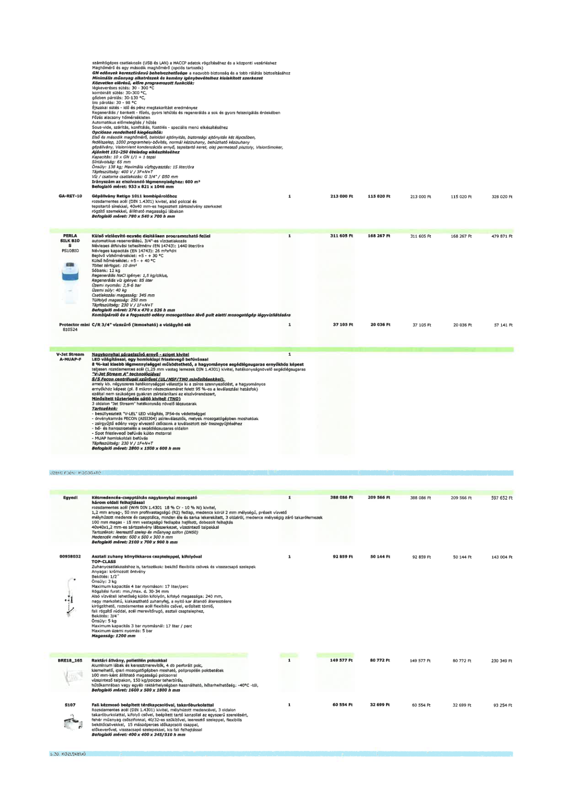

| Tétel | Menny. | Egys. | Anyag e.ár (net HUF) | Díj e.ár (net HUF) | Anyag összesen (net HUF) | Díj összesen (net HUF) | Anyag+Díj összesen (net HUF) |
|---|---|---|---|---|---|---|---|
| GA-RET-10 Gépállvány Retigo 1011 kombipárolóhoz | 1 | NaN | 213 000 | 115 020 | 213 000 | 115 020 | 328 020 |
| PERLA SILK BIO S PS10BIO Külső vízlágyító egység digitálisan programozható fejjel | 1 | NaN | 311 605 | 168 267 | 311 605 | 168 267 | 479 871 |
| Protector mini C/R 3/4" vízszűrő (lemosható) a vízlágyító elé 810524 | 1 | NaN | 37 105 | 20 036 | 37 105 | 20 036 | 57 141 |
| V-Jet Stream A-MUAP-F Nagykonyhai páraelszívó ernyő - sziget kivitel | 1 | NaN | 0 | 0 | 0 | 0 | 0 |
| Egyedi Kétmedencés-csepptálcás nagykonyhai mosogató | 1 | NaN | 388 086 | 209 566 | 388 086 | 209 566 | 597 652 |
| 00958032 Asztali zuhany könyökkkaros csapteleppel, kifolyóval | 1 | NaN | 92 859 | 50 144 | 92 859 | 50 144 | 143 004 |
| BRE18_165 Raktári állvány, polietilén polcokkal | 1 | NaN | 149 577 | 80 772 | 149 577 | 80 772 | 230 349 |
| S107 Fali kézmosó beépített térdkapcsolóval, takaróburkolattal | 1 | NaN | 60 554 | 32 699 | 60 554 | 32 699 | 93 254 |
